Visualization of Posterior Predictive Check of fit model
Source:R/pibble_plotting.R
ppc.pibblefit.RdVisualization of Posterior Predictive Check of fit model
Usage
# S3 method for class 'pibblefit'
ppc(m, ...)Details
ppc.pibblefit accepts the following additional arguments:
"type" type of plot (options "lines", "points", "bounds")
"iter" number of samples from posterior predictive distribution to plot (currently must be <= m$iter) if type=="lines" default is 50, if type=="ribbon" default is to use all available iterations.
"from_scratch" should predictions of Y come from fitted Eta or from predictions of Eta from posterior of Lambda? (default: false)
Examples
sim <- pibble_sim()
fit <- pibble(sim$Y, sim$X)
ppc(fit)
